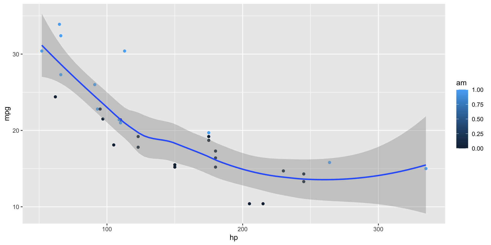
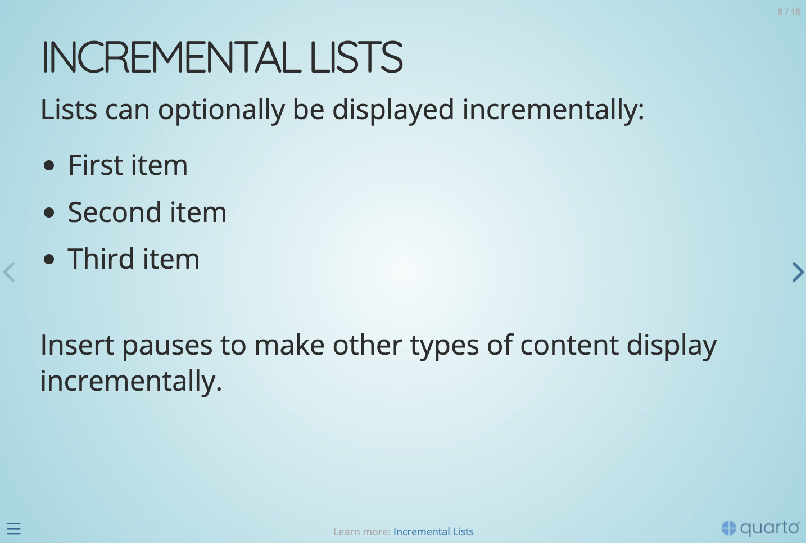
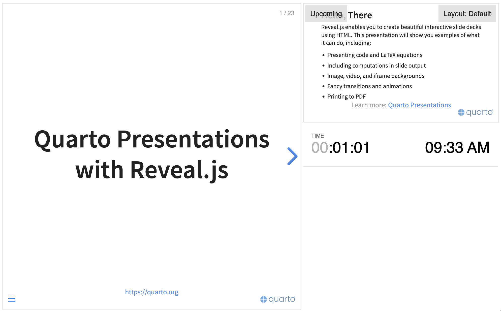

library(ggplot2)
ggplot(mtcars, aes(hp, mpg, color = am)) +
geom_point() + geom_smooth(formula = y ~ x, method = "loess")Quarto Presentations
Create beautiful interactive slide decks with Reveal.js
Hello, There
This presentation will show you examples of what you can do with Quarto and Reveal.js, including:
- Presenting code and LaTeX equations
- Including computations in slide output
- Image, video, and iframe backgrounds
- Fancy transitions and animations
- Printing to PDF
…and much more
Pretty Code
- Over 20 syntax highlighting themes available
- Default theme optimized for accessibility
# Define a server for the Shiny app
function(input, output) {
# Fill in the spot we created for a plot
output$phonePlot <- renderPlot({
# Render a barplot
})
}Code Animations
- Over 20 syntax highlighting themes available
- Default theme optimized for accessibility
# Define a server for the Shiny app
function(input, output) {
# Fill in the spot we created for a plot
output$phonePlot <- renderPlot({
# Render a barplot
barplot(WorldPhones[,input$region]*1000,
main=input$region,
ylab="Number of Telephones",
xlab="Year")
})
}Line Highlighting
- Highlight specific lines for emphasis
- Incrementally highlight additional lines
Executable Code
LaTeX Equations
MathJax rendering of equations to HTML
\begin{gather*}
a_1=b_1+c_1\\
a_2=b_2+c_2-d_2+e_2
\end{gather*}
\begin{align}
a_{11}& =b_{11}&
a_{12}& =b_{12}\\
a_{21}& =b_{21}&
a_{22}& =b_{22}+c_{22}
\end{align}
\[\begin{gather*}
a_1=b_1+c_1\\
a_2=b_2+c_2-d_2+e_2
\end{gather*}\]
\[\begin{align}
a_{11}& =b_{11}&
a_{12}& =b_{12}\\
a_{21}& =b_{21}&
a_{22}& =b_{22}+c_{22}
\end{align}\]
Column Layout
Arrange content into columns of varying widths:
Motor Trend Car Road Tests
The data was extracted from the 1974 Motor Trend US magazine, and comprises fuel consumption and 10 aspects of automobile design and performance for 32 automobiles.
| mpg | cyl | disp | hp | wt | |
|---|---|---|---|---|---|
| Mazda RX4 | 21.0 | 6 | 160 | 110 | 2.620 |
| Mazda RX4 Wag | 21.0 | 6 | 160 | 110 | 2.875 |
| Datsun 710 | 22.8 | 4 | 108 | 93 | 2.320 |
| Hornet 4 Drive | 21.4 | 6 | 258 | 110 | 3.215 |
| Hornet Sportabout | 18.7 | 8 | 360 | 175 | 3.440 |
| Valiant | 18.1 | 6 | 225 | 105 | 3.460 |
Incremental Lists
Lists can optionally be displayed incrementally:
- First item
- Second item
- Third item
Insert pauses to make other types of content display incrementally.
Fragments
Incremental text display and animation with fragments:
Fade in
Slide up while fading in
Slide left while fading in
Fade in then semi out
Strike
Highlight red
Slide Backgrounds
Set the background attribute on a slide to change the background color (all CSS color formats are supported).
Different background transitions are available via the background-transition option.
Media Backgrounds
You can also use the following as a slide background:
An image:
background-imageA video:
background-videoAn iframe:
background-iframe
Absolute Position
Position images or other elements at precise locations


Auto-Animate
Automatically animate matching elements across slides with Auto-Animate.
Auto-Animate
Automatically animate matching elements across slides with Auto-Animate.
Slide Transitions
The next few slides will transition using the slide transition
| Transition | Description |
|---|---|
none |
No transition (default, switch instantly) |
fade |
Cross fade |
slide |
Slide horizontally |
convex |
Slide at a convex angle |
concave |
Slide at a concave angle |
zoom |
Scale the incoming slide so it grows in from the center of the screen. |
Tabsets

| mpg | cyl | disp | hp | drat | wt | qsec | vs | am | gear | carb | |
|---|---|---|---|---|---|---|---|---|---|---|---|
| Mazda RX4 | 21.0 | 6 | 160.0 | 110 | 3.90 | 2.620 | 16.46 | 0 | 1 | 4 | 4 |
| Mazda RX4 Wag | 21.0 | 6 | 160.0 | 110 | 3.90 | 2.875 | 17.02 | 0 | 1 | 4 | 4 |
| Datsun 710 | 22.8 | 4 | 108.0 | 93 | 3.85 | 2.320 | 18.61 | 1 | 1 | 4 | 1 |
| Hornet 4 Drive | 21.4 | 6 | 258.0 | 110 | 3.08 | 3.215 | 19.44 | 1 | 0 | 3 | 1 |
| Hornet Sportabout | 18.7 | 8 | 360.0 | 175 | 3.15 | 3.440 | 17.02 | 0 | 0 | 3 | 2 |
| Valiant | 18.1 | 6 | 225.0 | 105 | 2.76 | 3.460 | 20.22 | 1 | 0 | 3 | 1 |
| Duster 360 | 14.3 | 8 | 360.0 | 245 | 3.21 | 3.570 | 15.84 | 0 | 0 | 3 | 4 |
| Merc 240D | 24.4 | 4 | 146.7 | 62 | 3.69 | 3.190 | 20.00 | 1 | 0 | 4 | 2 |
| Merc 230 | 22.8 | 4 | 140.8 | 95 | 3.92 | 3.150 | 22.90 | 1 | 0 | 4 | 2 |
| Merc 280 | 19.2 | 6 | 167.6 | 123 | 3.92 | 3.440 | 18.30 | 1 | 0 | 4 | 4 |
| Merc 280C | 17.8 | 6 | 167.6 | 123 | 3.92 | 3.440 | 18.90 | 1 | 0 | 4 | 4 |
| Merc 450SE | 16.4 | 8 | 275.8 | 180 | 3.07 | 4.070 | 17.40 | 0 | 0 | 3 | 3 |
| Merc 450SL | 17.3 | 8 | 275.8 | 180 | 3.07 | 3.730 | 17.60 | 0 | 0 | 3 | 3 |
| Merc 450SLC | 15.2 | 8 | 275.8 | 180 | 3.07 | 3.780 | 18.00 | 0 | 0 | 3 | 3 |
| Cadillac Fleetwood | 10.4 | 8 | 472.0 | 205 | 2.93 | 5.250 | 17.98 | 0 | 0 | 3 | 4 |
| Lincoln Continental | 10.4 | 8 | 460.0 | 215 | 3.00 | 5.424 | 17.82 | 0 | 0 | 3 | 4 |
| Chrysler Imperial | 14.7 | 8 | 440.0 | 230 | 3.23 | 5.345 | 17.42 | 0 | 0 | 3 | 4 |
| Fiat 128 | 32.4 | 4 | 78.7 | 66 | 4.08 | 2.200 | 19.47 | 1 | 1 | 4 | 1 |
| Honda Civic | 30.4 | 4 | 75.7 | 52 | 4.93 | 1.615 | 18.52 | 1 | 1 | 4 | 2 |
| Toyota Corolla | 33.9 | 4 | 71.1 | 65 | 4.22 | 1.835 | 19.90 | 1 | 1 | 4 | 1 |
| Toyota Corona | 21.5 | 4 | 120.1 | 97 | 3.70 | 2.465 | 20.01 | 1 | 0 | 3 | 1 |
| Dodge Challenger | 15.5 | 8 | 318.0 | 150 | 2.76 | 3.520 | 16.87 | 0 | 0 | 3 | 2 |
| AMC Javelin | 15.2 | 8 | 304.0 | 150 | 3.15 | 3.435 | 17.30 | 0 | 0 | 3 | 2 |
| Camaro Z28 | 13.3 | 8 | 350.0 | 245 | 3.73 | 3.840 | 15.41 | 0 | 0 | 3 | 4 |
| Pontiac Firebird | 19.2 | 8 | 400.0 | 175 | 3.08 | 3.845 | 17.05 | 0 | 0 | 3 | 2 |
| Fiat X1-9 | 27.3 | 4 | 79.0 | 66 | 4.08 | 1.935 | 18.90 | 1 | 1 | 4 | 1 |
| Porsche 914-2 | 26.0 | 4 | 120.3 | 91 | 4.43 | 2.140 | 16.70 | 0 | 1 | 5 | 2 |
| Lotus Europa | 30.4 | 4 | 95.1 | 113 | 3.77 | 1.513 | 16.90 | 1 | 1 | 5 | 2 |
| Ford Pantera L | 15.8 | 8 | 351.0 | 264 | 4.22 | 3.170 | 14.50 | 0 | 1 | 5 | 4 |
| Ferrari Dino | 19.7 | 6 | 145.0 | 175 | 3.62 | 2.770 | 15.50 | 0 | 1 | 5 | 6 |
| Maserati Bora | 15.0 | 8 | 301.0 | 335 | 3.54 | 3.570 | 14.60 | 0 | 1 | 5 | 8 |
| Volvo 142E | 21.4 | 4 | 121.0 | 109 | 4.11 | 2.780 | 18.60 | 1 | 1 | 4 | 2 |
Interactive Slides
Include Jupyter widgets and htmlwidgets in your presentations
Interactive Slides
Turn presentations into applications with Observable and Shiny. Use component layout to position inputs and outputs.
Preview Links
Navigate to hyperlinks without disrupting the flow of your presentation.
Use the preview-links option to open links in an iframe on top of your slides. Try clicking the link below for a demonstration:
Themes
10 Built-in Themes (or create your own)


Easy Navigation
Quickly jump to other parts of your presentation

Toggle the slide menu with the menu button (bottom left of slide) to go to other slides and access presentation tools.
You can also press m to toggle the menu open and closed.
Chalkboard
Free form drawing and slide annotations

Use the chalkboard button at the bottom left of the slide to toggle the chalkboard.

Use the notes canvas button at the bottom left of the slide to toggle drawing on top of the current slide.
You can also press b to toggle the chalkboard or c to toggle the notes canvas.
Point of View
Press o to toggle overview mode:

Hold down the Alt key (or Ctrl in Linux) and click on any element to zoom towards it—try it now on this slide.
Speaker View
Press s (or use the presentation menu) to open speaker view

Authoring Tools
Live side-by-side preview for any notebook or text editor including Jupyter and VS Code


Authoring Tools
RStudio includes an integrated presentation preview pane

And More…
- Touch optimized (presentations look great on mobile, swipe to navigate slides)
- Footer & Logo (optionally specify custom footer per-slide)
- Auto-Slide (step through slides automatically, without any user input)
- Multiplex (allows your audience to follow the slides of the presentation you are controlling on their own phone, tablet or laptop).